Guia de Configuração e Contribuição de Processos no GitHub
Requisitos para esse Guia: Git instalado na sua maquina
Quando se trata de Git, ele nos dá uma grande flexibilidade para configurar o repositório como bem desejarmos, portanto, que fique claro que:
- A TOTVS por si só não possui nenhuma recomendação nem diretiva sobre a utilização do GitHub pra controlar os processos do FLUIG, portanto esse processo foi desenhado da forma que melhor acreditamos servir o propósito de controle de versionamento, sendo passível de alterações e refinamentos.
1. Criação do Repositório do Processo na Organização do GitHub
Depois de conseguir acesso a Organização do GitHub através do Gerente de Projetos você irá acessar a aba "Repositories/Repositórios" e irá selecionar o botão verde "Novo Repositório", como demonstrado abaixo:
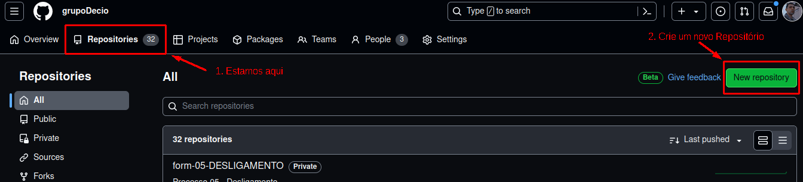 Para os processos novos, o padrão de nomenclatura segue:
form-XX-NOME_DO_PROCESSO
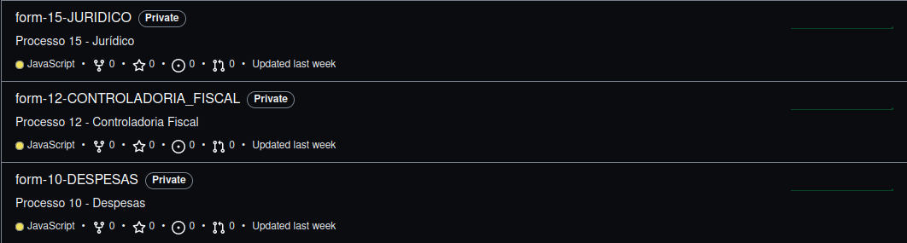
Para os processos antigos, o padrão é:
form-Ab.Solicitacao-NomeDoProcesso
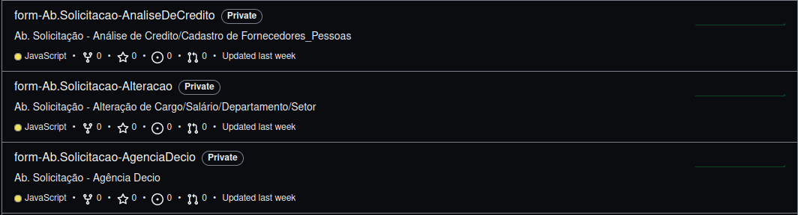 Sendo assim, você irá inserir o nome e descrição do novo repositório de acordo com esses padrões:
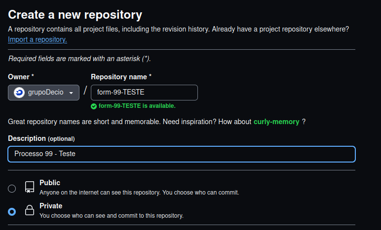
O resto das configurações não é necessário alteração, crie o novo repositório. Após a criação do repositório, copie o URL do caminho para o repositório.
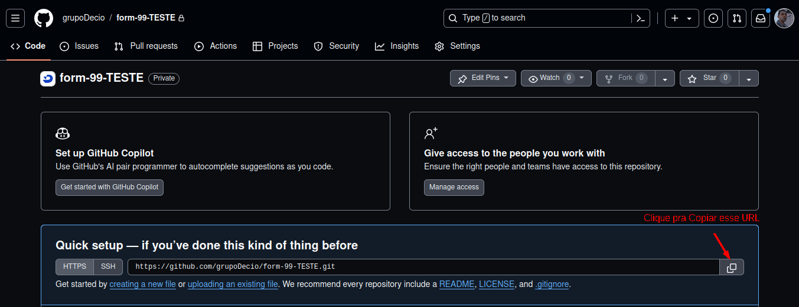
Você abrirá um terminal, navegará até o diretório onde deseja armazenar esse repositório do Git, irá clonar o Repositório na sua maquina e entrar nessa pasta.
(Meu sistema operacional é baseado no Linux, você pode fazer o mesmo através do Windows pelo Powershell ou no terminal do seu VSCode)
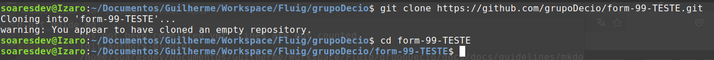 Já possuímos o Repositório que irá armazenar nosso processo, agora iremos inserir os arquivos que desejamos que o git controle as alterações, você deve inicialmente:
1.1 Baixar o arquivo ZIP do Processo do site do FLUIG e inseri-lo na pasta
Processos-Fluig -> Configurar Processos -> Selecione o Processo -> Exportar
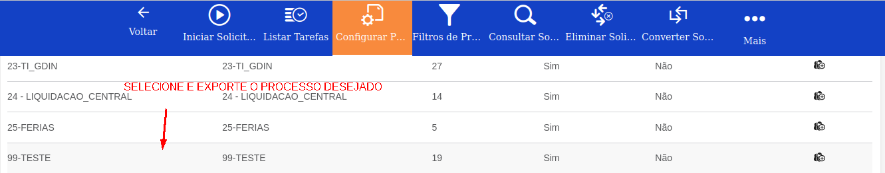
Será baixado um arquivo.zip, você deve inseri-lo na pasta do repositório do git que você criou, neste caso: form-99-TESTE
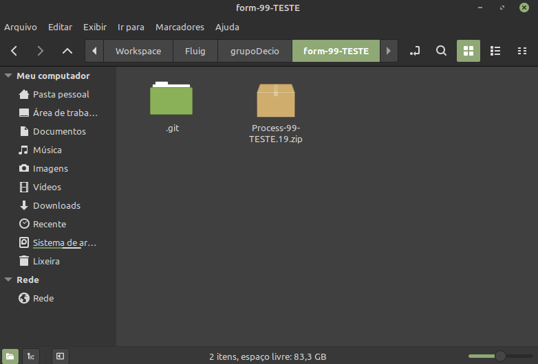
1.2 Abrir o Workspace do Eclipse dentro da pasta do repositório Git
Você deve fazer isso para que os próximos desenvolvedores quando clonarem o projeto, já tenham a perspectiva do FLUIG aberta no Eclipse assim que trocarem o workspace do Eclipse para essa pasta contendo o repositório do Git, pois o Eclipse gera alguns arquivos e metadados de configuração de ambiente.
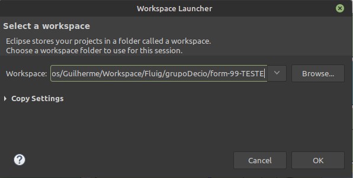
A partir desse momento o processo é o mesmo:
1.3 Abra a Perspectiva do FLUIG no Eclipse
1.4 Cadastre o servidor FLUIG no qual você baixou o processo.zip
1.5 Importe o Projeto FLUIG no Eclipse
Após tudo isso, você ficará com a pasta do repositório Git parecida com isso:
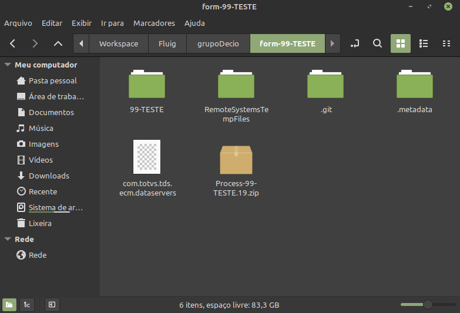 Rodando o comando: git status
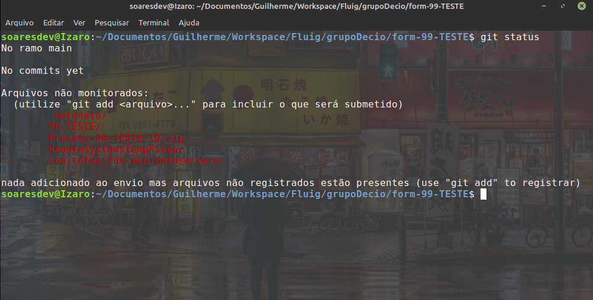
Observe que o Git está observando todas as alterações na nossa pasta, poderiamos enviar as alterações dessa forma, porém queremos que o git não envie para o repositório do git o arquivo: com.totvs.tds.ecm.dataservers
Que é responsável por se conectar ao servidor FLUIG, já que cada desenvolvedor pode ter um login diferente e essas credenciais ficariam visíveis e acessíveis para qualquer um com acesso aos repositórios, então por questões de segurança, vamos criar um arquivo .gitignore
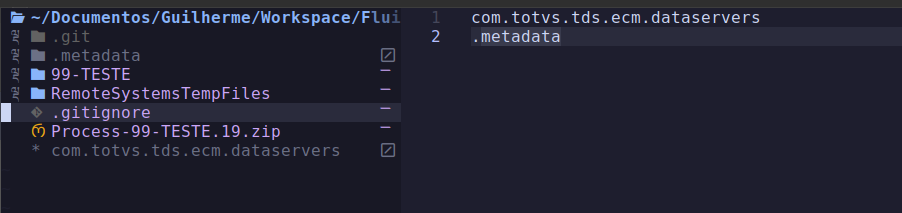
Essas duas linhas significam para o git que ele não deve olhar por alterações nesses arquivos, ou seja, eles não serão enviados para o repositório do git.
Eu inseri também a pasta .metadata pois até o momento me parece ser uma pasta irrelevante e que esta sempre sendo alterada, poluindo a visualização na hora de realizar um commit pela inumera quantidade de pequenos arquivos de metadados que mudam constantemente.
1.6 Inserir arquivos para o commit
Agora sim! Vamos realizar o nosso primeiro commit e enviar as alterações pro nosso repositório do GitHub
No terminal:
git add .
Para adicionarmos todos os arquivos presentes (exceto aqueles ignorados pelo git) Vale salientar que você pode adicionar arquivos individuais, como por exemplo:
git add nomeDoArquivo.js
Rodando git status novamente, iremos ver todos os arquivos que irão para o nosso commit em verde
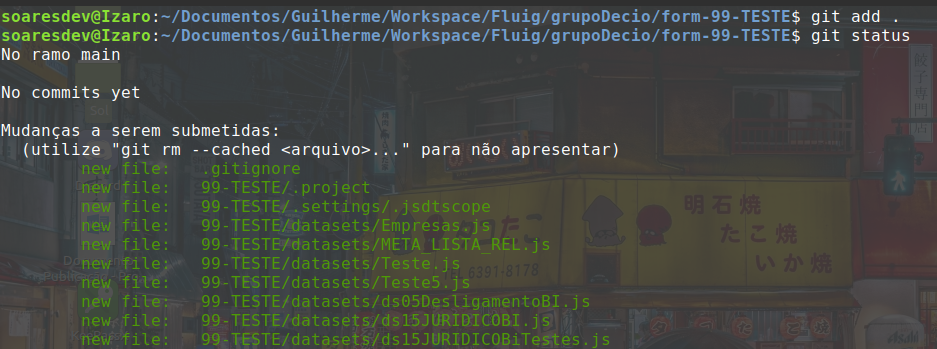
No meu caso, esse processo pertence a homologação, então eu irei criar uma nova branch chamada homolog para armazenar o estado da homologação, caso seja um processo da produção, você realizaria o commit aqui mesmo, na main.
Eu vou rodar:
git checkout -b homolog
Para criar uma branch chamada homolog e trocar para ela.
O comando: git checkout faz com que você troque de branch
Por exemplo:
git checkout main
Voltaria para a branch main, já que eu estaria na branch homolog
(Tudo no git é baseado no conceito de arvore e galhos, a main é o tronco da nossa arvore, e todas as outras branchs são galhos)
Quando você troca de branch, o git altera todos os arquivos de acordo com o estado daquela branch na qual o git está controlando
Isto significa que:
Se alguem criou um novo script de fluxo na branch homolog e commitou essas alterações para a mesma, se você der git checkout main, você poderá verificar que esse arquivo não estará mais presente no seu diretório, porque a branch que possui o script é a homolog e não a main.
1.7 Realizar o commit
Depois de inserirmos os arquivos desejados pro nosso commit, na branch que queremos, iremos rodar:
git commit -m "Mensagem do Commit"
Observe que: Embora você tenha criado um commit, essas alterações ainda estão somente na sua maquina, isso porque você poderia trabalhar offline e quando conseguisse rede, enviar os commits criados para o repositório remoto através do comando:
git push
Quando é o primeiro commit de uma nova branch, o git sempre irá pedir para rodar um comando parecido com esse:
git push --set-upstream origin homolog
CUIDADO COM AS VERSÕES
Por esse mesmo motivo de podermos trabalhar offline que sempre que formos realizar uma alteração em um repositório git, é costume sempre rodarmos o comando:
git pull
Para puxarmos todas as alterações do repositório remoto daquela branch, garantindo que não iremos realizar alterações em uma versão antiga do projeto.
Pois imagine a situação:
Eu como desenvolvedor de uma equipe ficticia, na semana passada criei uma branch chamada sprint4/guilherme para realizar as alterações que me foram requisitadas naquela sprint.
No final da sprint após os testes, meu chefe deu merge nas alterações (enviou as alterações da minha branch e de meus colegas desenvolvedores para a main)
Depois dessas alterações, a minha branch main ficou desatualizada, então:
git checkout main (Voltar para a main)
git pull (Puxar as alterações, já que o estado da minha main localmente estava desatualizada)
Nesse momento, minha branch ficou atualizada, se eu criar uma nova branch a partir da main, quando eu realizar um commit e for necessário dar merge, não haverá conflito de versões.
Agora, imagine que eu não tenha dado pull, somente criei uma nova branch chamada:
sprint5/guilherme
no final da sprint, quando meu chefe fosse dar merge na main, ele veria que minha branch está atrasada em uma semana e provavelmente ele precisaria resolver conflitos de merge, que teria sido evitado se eu tivesse puxado as alterações que eu e meus colegas fizemos na sprint passada.